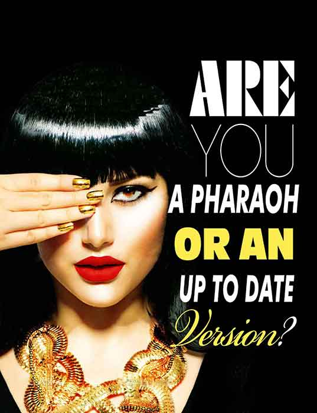

-
Did you have a real wedding?
- First Published in Insight Magazine
- Written by : Mariam Moussa
- May 15, 2016
Wedding Bells. Tying Knots. Happily Ever After. Just Married. Floral Decorations. Wedding Themes. Ballrooms. Wedding Dresses. Wedding Suits. Bridesmaids...
Read More -

Could Sports Be Dangerous?!
- First Published in Insight Magazine
- Written by : Mariam Moussa
- April 15, 2016
When would you say that something is dangerous? When something is at the verge of being lost, damaged or depleted? ...
Read More -

7 Magical Keys to Empower A Woman Now!
- First Published in Insight Magazine
- Written by : Mariam Moussa
- March 15, 2016
What is Empowering Women for you? What’s the importance of Empowering Women? Who do you want Empowered Women to become? ...
Read More -

Are You a Pharaoh or an Up to date Version?!
- First Published in Insight Magazine
- Written by : Mariam Moussa
- February 1, 2016
If you would compare yourself today and who you are right now to the different Egyptians along the history, whom would you closely be similar to? ...
Read More -

Is it My Way or The Highway?!
- First Published in Insight Magazine
- Written by : Mariam Moussa
- January 1, 2016
What comes to your mind when you hear the word contradiction?
Read More
I asked some friends this question and here are some of their common answers: ... -

ARE YOU WILD ENOUGH?!
- First Published in Insight Magazine
- Written by : Mariam Moussa
- December 1, 2015
Do people say that wild is crazy?! Do people say that wild is being outside of the box?! Do people say that wild is not who you are supposed to be?!...
Read More -
Is Doing Good the Best Investment?
- First Published in Insight Magazine
- Written by : Mariam Moussa
- November 1, 2015
Hell yeah! Well, when you do good to others, you do give your money that you have earned through hard work and long working hours ...
Read More -

Mysterious/Seductive Relationships …. YES or NO?!
- First Published in Insight Magazine
- Written by : Mariam Moussa
- October 1, 2015
Be Mysterious! Be seductive! That’s what guys want now right?! You don’t want to risk your relationship, do you?! … Some people would advise you with that!...
Read More